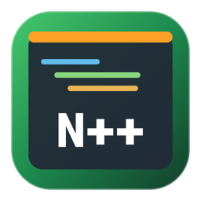
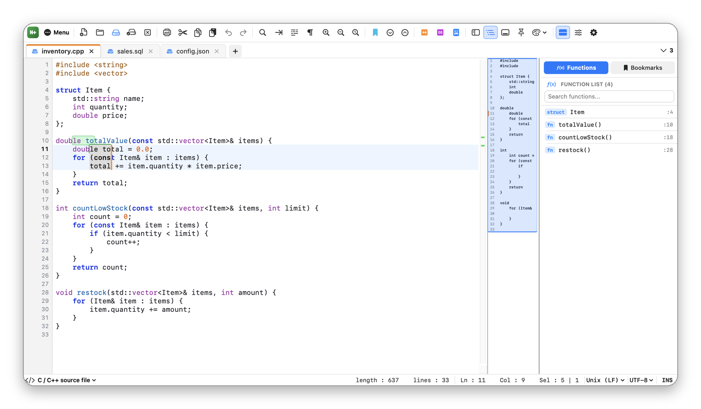
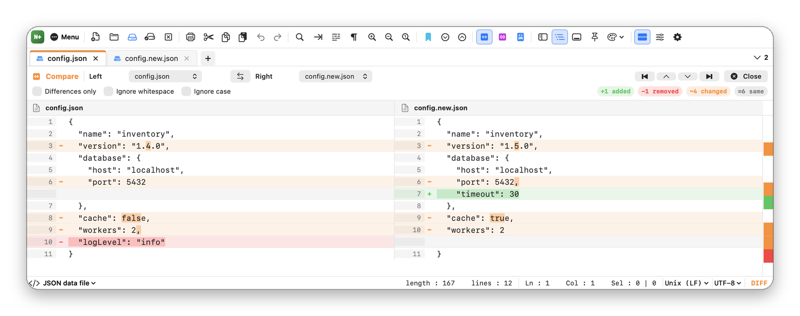
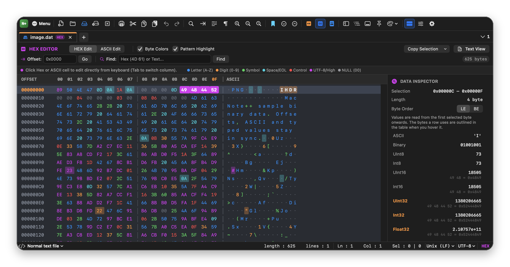
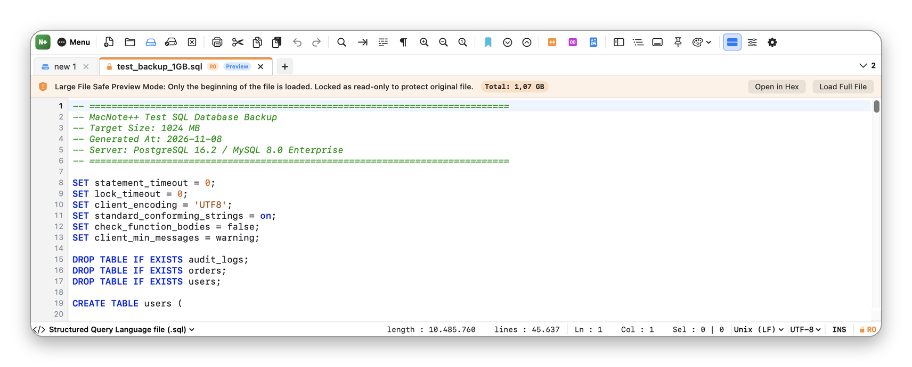

MacNote++
Metin, kod ve hex düzenleyici
MacNote++, macOS için ücretsiz ve açık kaynak, yerel bir metin, kod ve hex düzenleyicidir: sekmeler, sözdizimi renklendirme, çoklu imleç, dosya karşılaştırma ve büyük dosya desteği.
Mac'te günlük metin ve kod düzenleme için BBEdit, CotEditor ve Sublime Text'e ücretsiz bir alternatif.
MacNote++'ı macOS için indir (zip)
Ayrıntılı belgeler · Tüm sürümler · Kaynak kod: GitLab · GitHub
Özellikler
- Sürükleyerek sıralanan, sabitlenebilen ve salt okunur kilitlenebilen sekmeler
- Dosya adı ve içeriğinden algılanan 21 dil için sözdizimi renklendirme
- Her biri kendi seçimine sahip çoklu imleçler ve dikdörtgen seçim
- Metin ve sayı dizisi eklemek için sütun düzenleyici
- Belgede, tüm açık sekmelerde ya da klasörde düzenli ifadeyle bulma, değiştirme ve işaretleme
- Satır içi değişiklikleri gösteren yan yana karşılaştırma
- Çoklu bayt seçimi ve tam sayı, ondalıklı sayı denetçisi olan hex düzenleyici
- Büyük dosyalar güvenli önizlemeyle açılır; hex görünümü 1 GB'lık dosyayı bile siz kaydırdıkça diskten okur
- Kodlamaları ve satır sonlarını korur, başka uygulamaların değiştirdiği dosyaları algılar
- Satır araçları, yer imleri, makrolar, fonksiyon listesi, kod haritası ve Markdown önizleme
- JSON ve SQL biçimlendirme, Base64 ve URL kodlama, MD5 ve SHA-256
- Dört editör teması; GitLab'dan kendini günceller
Ekran görüntüleri




Sık sorulan sorular
MacNote++ ücretsiz mi?
Evet. MacNote++, GPL-3.0-or-later lisansıyla ücretsiz ve açık kaynaktır; reklam, hesap ya da uygulama içi satın alma yoktur.
Dosyalarımı bir yere gönderiyor mu?
Hayır. Tek ağ isteği güncelleme denetimidir; günde en fazla bir kez gitlab.com'dan son sürüm bilgisini okur. Ayarlar'dan kapatabilirsiniz.
Çok büyük dosyaları açabilir mi?
Evet. 80 MB ve üstü dosyalar önizlemeyle açılabilir; hex görünümü 1 GB'lık dosyayı bile siz kaydırdıkça diskten okur.
Birden fazla satırı aynı anda düzenleyebilir miyim?
Evet. ⌥ + tık ya da ⌥⇧↑ / ↓ ile imleç ekleyin veya ⌥ + sürükleme ile dikdörtgen seçim yapıp yazın.
Hangi Mac'lerde çalışır?
macOS 14 Sonoma veya üstü, Apple Silicon ve Intel Mac'ler.
macOS neden ilk seferde engelliyor?
MacNote++ Apple tarafından onaylanmamıştır; bunun için ücretli geliştirici hesabı gerekir. Sistem Ayarları ▸ Gizlilik ve Güvenlik ▸ Yine de Aç ile bir kez izin verin; bkz. İndirme ve kurulum.
BBEdit, CotEditor ve Sublime Text yalnızca karşılaştırma için anılmıştır; MacNote++ bunlarla ya da Apple ile bağlantılı değildir.
Kurmadan önce
Uygulamalar Apple onayından (notarization) geçmedi; bunun için ücretli geliştirici hesabı gerekiyor. Bu yüzden macOS ilk açılışta engeller. Her uygulamaya Sistem Ayarları ▸ Gizlilik ve Güvenlik ▸ Yine de Aç ile bir kez izin verin. Her sürümde SHA-256 değeri yayımlanır.